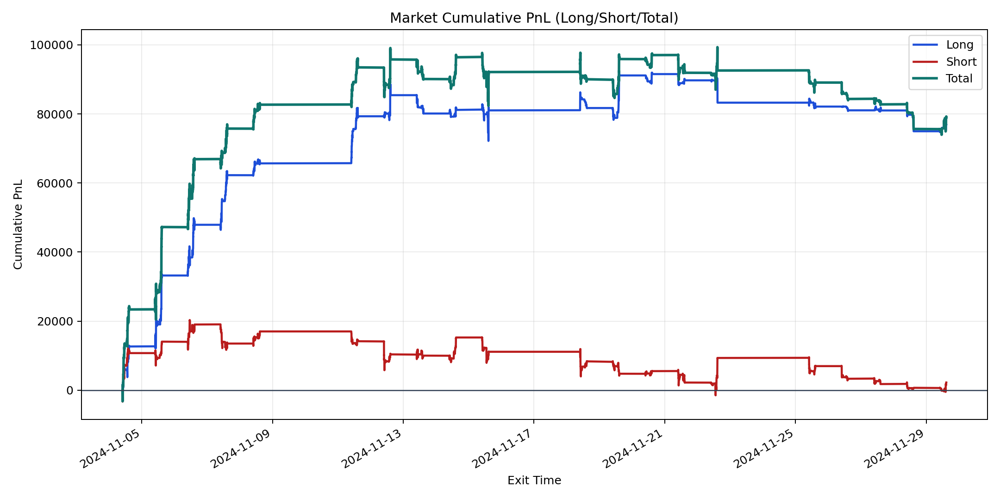
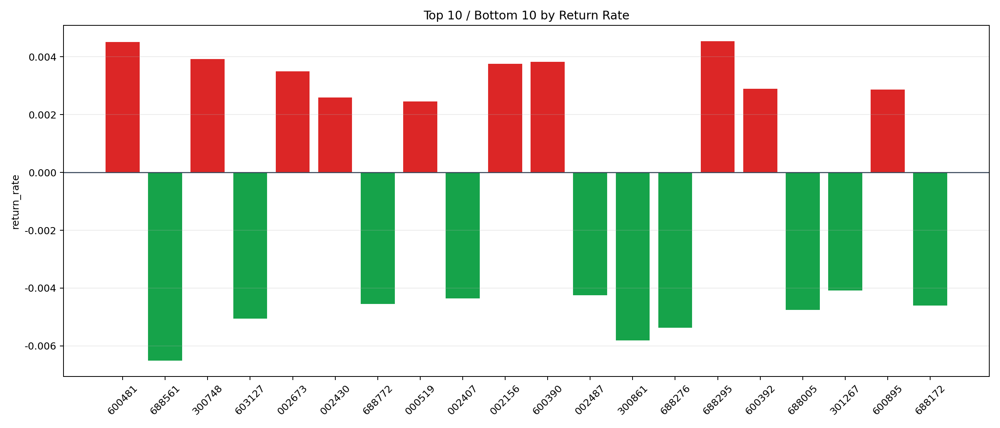

| repo_root | /home/haoranyou/data/output/alpha0.4_1w_5s_3ticks_index_filter/index_weights_500 |
|---|---|
| period_months | 1 |
| period_label | 2024-11-04_to_2024-11-29 |
| start_time | 2024-11-04 09:50:12 |
| end_time | 2024-11-29 14:45:02 |
| n_trades | 17555 |
| n_symbols | 160 |
| total_pnl | 79214.04650000024 |
| long_total_pnl | 77005.0632500001 |
| short_total_pnl | 2208.983250000147 |
| total_entry_notional | 160597546.0 |
| long_entry_notional | 92814445.0 |
| short_entry_notional | 67783101.0 |
| total_return_rate | 0.0004932456844639472 |
| long_return_rate | 0.0008296667964776398 |
| short_return_rate | 3.2588996629117735e-05 |
| top_symbols_by_return | ["688295", "600481", "300748", "600390", "002156", "002673", "600392", "600895", "002430", "000519"] |
| bottom_symbols_by_return | ["688561", "300861", "688276", "603127", "688005", "688172", "688772", "002407", "002487", "301267"] |

